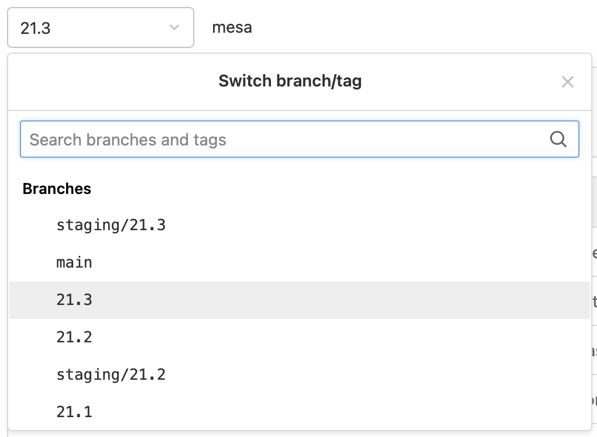

For Raspberry Pi OS 2022 or newer
Install the driver viasudo apt install mesa-vulkan-drivers. No driver compilation or reboot necessary. Skip to the bottom of this article for some Vulkan sample programs you can compile and run.
For Raspberry Pi OS 2021 or earlier
The mesa driver must be compiled from source.Step 1: Install Dependencies
We need to install some dependency libraries in order to compile the Vulkan driver. Run the following command to install them:sudo apt-get install libxcb-randr0-dev libxrandr-dev libxcb-xinerama0-dev libxinerama-dev libxcursor-dev libxcb-cursor-dev libxkbcommon-dev xutils-dev xutils-dev libpthread-stubs0-dev libpciaccess-dev libffi-dev x11proto-xext-dev libxcb1-dev libxcb-*dev libssl-dev libgnutls28-dev x11proto-dri2-dev x11proto-dri3-dev libx11-dev libxcb-glx0-dev libx11-xcb-dev libxext-dev libxdamage-dev libxfixes-dev libva-dev x11proto-randr-dev x11proto-present-dev libclc-dev libelf-dev mesa-utils libvulkan-dev libvulkan1 libassimp-dev libdrm-dev libxshmfence-dev libxxf86vm-dev libunwind-dev libwayland-dev wayland-protocols libwayland-egl-backend-dev valgrind libzstd-dev vulkan-tools git build-essential bison flex ninja-build python3-mako
Step 2: Download the source code
Using git, download the source code for Mesa, by running the following command:git clone -b 21.3 https://gitlab.freedesktop.org/mesa/mesa.git mesa_vulkan --depth=1
Using the
--depth=1 argument allows us to avoid downloading the entire git history, which saves significant time on slow internet connections.
To download a different version, change the number after the -b argument to the version you want. Visit https://gitlab.freedesktop.org/mesa/mesa
to view the version tags that are available.
Expand to show screenshot
Step 3: Compile and install the driver
We need to do two things for this step. First, we will configure the build system for our device, by running the following command:# move our terminal into the source code folder
cd mesa_vulkan
# configure into a folder named "build"
CFLAGS="-mcpu=cortex-a72" \
CXXFLAGS="-mcpu=cortex-a72" meson --prefix /usr \
-D platforms=x11 \
-D vulkan-drivers=broadcom \
-D dri-drivers= \
-D gallium-drivers=kmsro,v3d,vc4 \
-D buildtype=release build
build inside the repo, which contains everything needed to compile the driver.
Next, we'll compile, by running the following commands:ninja -C build -j`nproc` && sudo ninja -C build install
If the compilation is successful, the Vulkan driver will be installed! You do not need to restart your pi to begin using it.
Step 4 (optional): Test the Vulkan driver
The Sascha Willems Vulkan demos are a good way to test a platform's vulkan implementation. We can compile them with the following commands:# Download the code
git clone --recursive --depth=1 https://github.com/SaschaWillems/Vulkan.git
cd Vulkan
# download the assets (this can take a while!)
python3 download_assets.py
# install CMake (needed for compilation)
sudo apt install cmake -y
# configure and compile
mkdir build && cd build
cmake -G "Ninja" -DCMAKE_BUILD_TYPE=Release ..
cmake --build .
build/bin and run the samples!